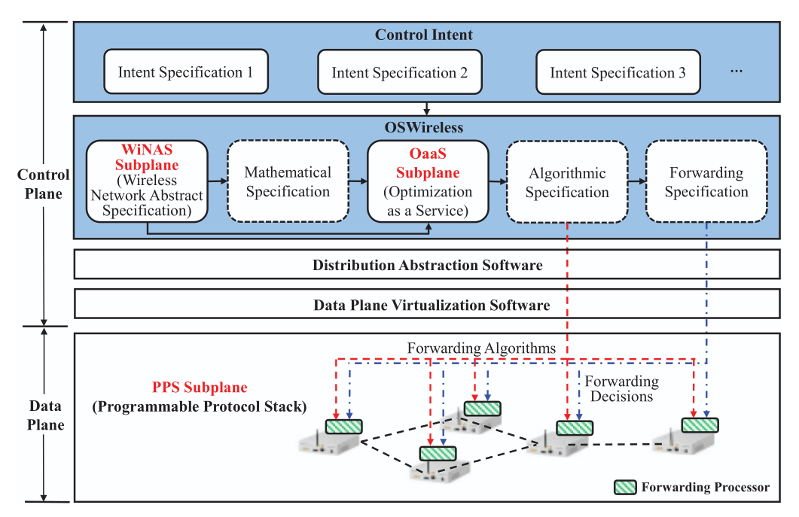
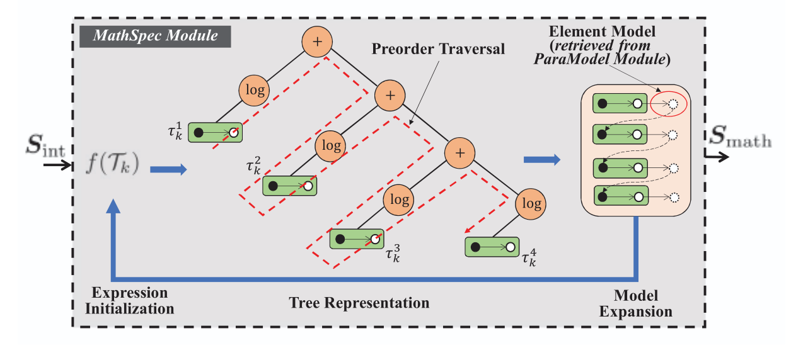
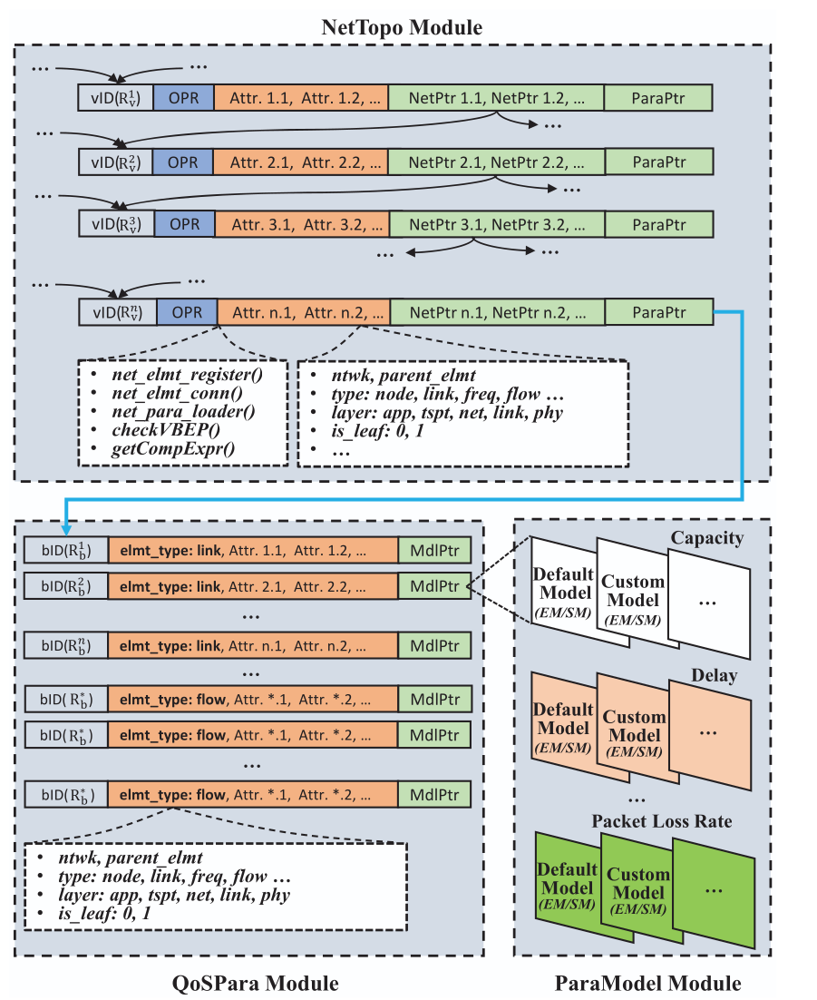
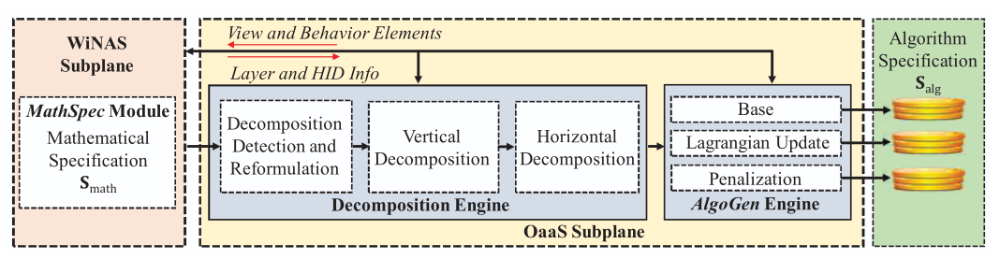
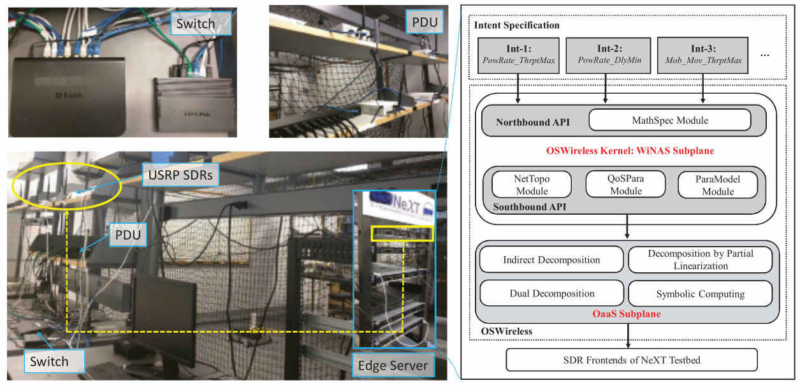
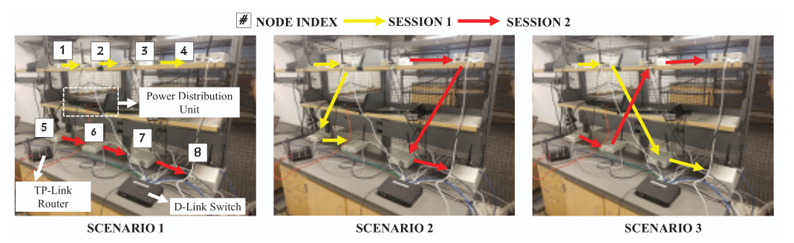

OSWireless
Enhancing Automation for Optimizing Intent-Driven Software-Defined Wireless Networks
Introduction
OSWireless is an intent-driven control framework for software-defined wireless networks. It enables network engineers to define network objectives using high-level APIs while automatically generating the distributed control algorithms required to achieve those objectives.
Developing optimized wireless network control applications typically requires expertise in network modeling, optimization, protocol design, and distributed implementation. OSWireless simplifies this workflow by abstracting these tasks into modular control plane services, allowing users to focus on specifying what the network should accomplish rather than how it should be implemented.
The framework extends traditional software-defined networking by providing specification abstraction in addition to the commonly available distribution and forwarding abstractions. High-level intent specifications are translated into mathematical optimization models, decomposed into distributed optimization problems, and converted into executable control programs for deployment on programmable wireless nodes.
OSWireless is organized into two primary control-plane subplanes. The Wireless Network Abstraction Specification (WiNAS) Subplane constructs mathematical representations of user-defined network intents, while the Optimization-as-a-Service (OaaS) Subplane generates the distributed optimization algorithms required for runtime execution. The framework is designed to operate with the NeXT software-defined wireless testbed and supports deployment on networks built using USRP software-defined radios.

Software & Hardware Prerequisites
Hardware Requirements
| Component | Specification | Notes |
|---|---|---|
| Edge Server | Dell EMC R340 PowerEdge workstations (5×) | Intel Xeon E-2246G 3.6 GHz CPU, Ubuntu 18.04. One workstation hosts OSWireless; the others act as SDR controlling hosts. |
| Front-End SDR | Ettus USRP N210 (20×) | Software radio forwarding substrates; 2–2.6 GHz spectrum band divided into three subchannels |
| Power Distribution | CyberPower PDU41001 Switched PDU (3×) | Enables remote power cycling and remote experimentation |
| Networking | Two Gigabit Ethernet switches, TP-Link router, D-Link switch | Connects edge servers and front-end SDRs |
| Antennas / Cables | Standard USRP antennas, Gigabit Ethernet cables | Per-node TX/RX |
Software Requirements
| Software | Purpose | Notes |
|---|---|---|
| Ubuntu 18.04 (or later) | Host operating system | Used on all edge server workstations |
| Python 3.x | Runs the OSWireless kernel, decomposition, and algorithm generation scripts | Core requirement |
| SymPy | Symbolic mathematical operations required by decomposition automation | sympy.org |
| CogApp | Open-source content generator used for executing Python snippets in the numerical algorithm templates | pypi.python.org/pypi/cogapp |
| NumPy / SciPy | Numerical computation in the generated optimization algorithms | Standard scientific stack |
| UHD (USRP Hardware Driver) | Host–USRP interface for the N210 front-ends | Required only for testbed execution |
| GNU Radio | Baseband signal processing for the programmable protocol stack | Required only for testbed execution |
Knowledge Prerequisites
Users should be familiar with the basics of network optimization (convex optimization, utility maximization, Lagrangian duality and decomposition theory), software-defined networking concepts (control plane vs. data plane, intent specification), and cross-layer wireless protocol design. Familiarity with USRP/GNU Radio workflows is helpful for the testbed experiments but is not required for the algorithm generation stage.
Setup Guide
Step 1: Clone the Repository
git clone https://github.com/WingsLabWireless/OSWireless_G1.git
cd OSWireless_G1
unzip OSWireless_v1.zipThe archive expands into two main directories: OSW-G2/NeXT-OS (the OSWireless control plane and algorithm generation) and OSW-G2/NeXT-PPS (the programmable protocol stack that runs on the SDR testbed).
Step 2: Generate the Control Algorithms
Navigate to the OSWireless kernel directory and execute the demo script corresponding to the desired control intent. Each script defines an intent specification using the high-level WiNAS APIs, constructs the mathematical specification, decomposes it, and generates the distributed operational algorithms.
cd OSW-G2/NeXT-OS
python3 g2_demo1.py # Experiment 1: MSMH_PowRate_ThrptMax
python3 g2_delay.py # Experiment 2: MSMH_PwrRate_DlyMin
python3 g2_mobile.py # Experiment 3: MSMHMob_Mov_ThrptMaxThe generated algorithms are written to separate repositories, one per experiment:
| Script | Experiment | Output Repository |
|---|---|---|
g2_demo1.py | MSMH_PowRate_ThrptMax | NCP-g2_rate_power |
g2_delay.py | MSMH_PwrRate_DlyMin | NCP-g2_min_delay |
g2_mobile.py | MSMHMob_Mov_ThrptMax | NCP-g2_location |
Step 3: Configure the SDR Testbed
Move to the programmable protocol stack directory and edit the network configuration:
cd OSW-G2/NeXT-PPS- Configure node addresses: In
netcfg_g2.py, set the IP addresses of the USRPs and their controlling laptops/workstations at lines 373–417. - Select the experiment: In
netcfg_g2.py, change the scheme at line 180 to match the experiment whose algorithms were generated in Step 2.
Step 4: Run the Experiment
Two sessions with four nodes each are launched using the provided per-session scripts:
python3 pc_1.py # Session 1
python3 pc_2.py # Session 2Each node runs the automatically generated distributed control program, which adapts the transmission parameters (transmit power, source rate, coding rate) at different layers of the programmable protocol stack at network run time.
Overall Design Objective
The primary goal of OSWireless is to enable intent-driven wireless networking by hiding the specification complexity from network engineers. Given a control intent (what to do, e.g., maximize network spectral efficiency or minimize end-to-end delay), OSWireless determines in an automated manner a desirable operational forwarding strategy (how to do it, e.g., which nodes transmit with what power, in which frequency bands, and in which time slots) executable on the distributed physical forwarding substrates.
Denoting Sint and Sfwd as the intent and forwarding specifications, the design objective is expressed as a mapping f : C(Sint) → D(Sfwd), where C(·) indicates centralized definition and D(·) indicates distributed deployment.
Three-Phase Approach
OSWireless realizes this mapping through three phases:
- Phase (i) — Intent to Mathematical: The control intent Sint is specified centrally using the OSWireless APIs, and the corresponding mathematical representation Smath is constructed. Handled by the WiNAS Subplane.
- Phase (ii) — Mathematical to Algorithmic: A set of possibly distributed numerical solution algorithms Salg is generated to solve Smath. Handled by the OaaS Subplane.
- Phase (iii) — Algorithmic to Forwarding: Salg is executed on the distributed physical substrates to obtain the forwarding specification Sfwd at network run time.
The rationale behind this three-phase design is to separate the coupled network control processes — network modeling, objective formulation, and distributed algorithm design — and provide the functionality of each process as a service to the others. This is similar in spirit to how the TCP/IP protocol stack separates network functionalities into layers and provides each layer as a service to the others.
OSWireless Kernel: WiNAS Subplane
The Wireless Network Abstraction Specification (WiNAS) Subplane is the kernel of OSWireless. Its core functionalities are two-fold: constructing the mathematical specification Smath from a user-defined intent specification Sint, and providing kernel services on which the other OSWireless functionalities are implemented. It comprises four modules: MathSpec, NetTopo, QoSPara, and ParaModel.
Network Elements
In OSWireless, each network component or parameter is a Network Element, of which there are two types:
- View element: Characterizes the global view of the network, i.e., the graph representation of the network topology based on vertices (nodes) and edges (links), with each vertex or edge associated with hardware and radio resources such as antennas and subchannels. The set of view elements is denoted V.
- Behavior element: Characterizes the behaviors of view elements in terms of QoS metrics, e.g., noise, capacity, delay. The set of behavior elements is denoted B. A behavior element is a leaf element if it cannot be expressed as a function of other behavior elements (e.g.,
noise,power); otherwise it is an intermediate element (e.g.,capacity, a function of noise and power).
A view-behavior element pair (VBEP) Ti = (Vi, Bi) is the basic unit from which both Sint and Smath are constructed. The key difference: Sint characterizes network behaviors mostly through intermediate behavior elements without exposing the low-level coupling to the engineer, while Smath exposes all the details of that coupling.
MathSpec Module
The MathSpec Module constructs Smath from Sint in three steps:
- Expression Initialization: Each intent specification consists of a set of textual expressions defining the utility or constraints of the target control problem. This step replaces the textual API expressions with the corresponding VBEPs to build an initial representation f(Tk). For example, a sum-log-rate utility over four links becomes f(Tk) = log(link1.rate) + log(link2.rate) + log(link3.rate) + log(link4.rate), where
logintroduces proportional fairness among the links. - Tree Representation: The textual expression is converted into a binary tree in which every leaf node is a VBEP and all other nodes are mathematical operators. Preorder traversal is used to identify the VBEPs. The process stops when all leaf nodes are VBEPs.
- Model Expansion: Each identified VBEP is substituted with its corresponding model defined in the ParaModel Module, and the updated expression is converted into a new binary tree. This repeats until all behavior elements in the expression are leaf behavior elements.

NetTopo Module
The NetTopo Module enables flexible definition of view and behavior elements, characterizes the coupling among defined network elements, and associates them with their mathematical models. It also provides internal interfaces among WiNAS modules and external interfaces to the OaaS Subplane.
NetTopo manages a set of view records, each a variable-length tuple with five categories of fields:
vID— the OSWireless-wide unique ID of the view element.vAttrList— attributes such as element name (vElmtName), parent view element (vPrntElmt), and whether the record is a set or an individual element (vElmtType).vNetPtr— pointers to other associated view elements, e.g., the individual elements forming a set element.vBPtr(ParaPtr) — the set of behavior elements attached to this view element.vOprPtr— the set of operations supported by this view element, designed to enable automated expression initialization and model expansion (e.g.,checkVBEP(),getCompExpr(),vBElmtLoader()).
QoSPara Module
The QoSPara Module maintains the set of behavior elements B. Each behavior record consists of a unique ID bID and an attribute list bAttrList. Two attributes are central to distributed decomposition:
bLayer— the protocol layer information of the behavior element (app, transport, network, link, phy).bHID— the horizontal index, defining the node view element to which the behavior element is associated. This information is passed to the OaaS Subplane for automated distributed problem decomposition.
Each behavior record also carries a bMdlPtr field pointing to the mathematical model of the behavior element in the ParaModel Module.
ParaModel Module
The ParaModel Module defines all models available to each behavior element. Two model types are supported:
- Expression Model (EM): Models a behavior element using a closed-form mathematical expression.
- Script Model (SM): Models a behavior element using a script. Script models provide more flexibility in characterizing coupling among behavior elements and are better suited to sophisticated network control problems.

OaaS Subplane Design
Given the mathematical specification Smath produced by WiNAS, the Optimization-as-a-Service (OaaS) Subplane automatically constructs a set of numerical solution algorithms executable on distributed forwarding substrates. Since Smath is defined centrally and possibly spans multiple protocol layers, it must first be decomposed. OaaS consists of two major components: the Decomposition Engine and the AlgoGen Engine.

Decomposition Engine
A textual expression f is decomposed in two steps: break f into a set of component expressions connected by the operator "+", then assign those component expressions into groups corresponding to different subproblems. The first step reuses the tree representation service provided by the WiNAS Subplane. The second step applies two types of decomposition:
- Vertical decomposition: Uncouples the protocol layers involved in Smath. For each component expression, its associated layer is obtained via the WiNAS API
bLayer(). For example, the VBEP (ses,rate) — the transport-layer transmission rate of a session — assigns its component expression to the transport-layer subproblem. - Horizontal decomposition: Further decomposes each per-layer subproblem into per-node subproblems using the horizontal index (HID). The HID identifies the view network element where another behavior or view element should be registered and managed at run time. By default the HID is the parent view element: the HID of
link_capacityis its parentlink, and the HID of a link is thesource_nodeof that link. The APIbHID()is applied repeatedly until the HID of the view element is itself, at which point the component expression is assigned to the corresponding subproblem.
Decomposability Detection and Reformulation
Expressions in wireless network optimization are not always decomposable, because control variables at different protocol layers and different nodes are often coupled. The decomposability of f is determined branch-by-branch using the layer checking service bLayer() and the HID checking service bHID(): if a component expression spans different protocol layers, it is nondecomposable and cannot be assigned to any single layer subproblem.
To handle these cases, OSWireless automates decomposition techniques including dual decomposition, indirect decomposition, and decomposition by partial linearization. Under indirect decomposition, auxiliary variables are introduced to uncouple variables in a nondecomposable expression and to coordinate the optimization of the resulting subproblems.
A representative example is the M/M/1 queuing delay model, in which the average response time is 1 / (link_capacity − src_rate). This expression is not directly decomposable, since link_capacity and src_rate operate at the physical and transport layers respectively. Indirect decomposition introduces an auxiliary variable v_aux together with the decomposable equality constraint v_aux == link_capacity - src_rate. Lagrangian coefficients introduced by dual decomposition are another form of auxiliary variable. The rules for introducing auxiliary variables and assigning them to protocol layers are defined in the Decomposition Detection and Reformulation Module and in the behavior element models of ParaModel.
The symbolic mathematical operations required by this decomposition automation are based on the open-source symbolic computing library SymPy.
AlgoGen Engine
The AlgoGen Engine generates the distributed algorithmic specification Salg by producing numerical solution algorithms for each subproblem. Three types of algorithms are generated:
- Base optimization algorithm — solves the local subproblem at each node.
- Vertical signaling algorithm — exchanges the signaling parameters that couple protocol layers. Under dual decomposition, these are the Lagrangian coefficients, updated at run time by a projected linear operation derived from the corresponding constraint expression and exchanged among subproblems.
- Horizontal penalization algorithm — applies a penalization term incorporated into the utility function to prevent a distributed node from hurting other nodes too much. Penalization terms are generated automatically by converting the textual expression into the symbolic domain.
A set of numerical algorithm templates defines the formats for the optimization variables, signaling parameters, and penalization terms. These templates are built on CogApp, an open-source content generator for executing Python snippets in source files. Optimization variables are specified in Sint, stored in the QoSPara Module, and retrieved via the WiNAS API bVar() during base algorithm construction. Both scalar and vector variables are supported.
NeXT Testbed
OSWireless is prototyped and deployed over NeXT, a software-defined network emulation and experimentation testbed. The testbed has three major components:
- Edge server: Five Dell EMC R340 PowerEdge workstations (Intel Xeon E-2246G 3.6 GHz, Ubuntu 18.04). One workstation runs the OSWireless prototype (WiNAS + OaaS Subplanes); the remaining workstations act as controlling hosts for the front-end SDRs, performing baseband signal processing and running the automatically generated distributed control programs.
- Front-end SDR: 20 USRP N210 radios powered by three CyberPower PDU41001 switched PDUs, which enable remote experimentation and community sharing of the testbed. Edge servers and SDRs are connected via two Gigabit Ethernet switches.
- Programmable protocol stack (PPS): Operates over the software radio forwarding substrates and exposes the parameters that the generated control programs adapt at run time.

Programmable Protocol Stack Parameters
| Parameter | Value / Range |
|---|---|
| Modulation Schemes | BPSK, QPSK, GMSK, and others |
| Forward Error Correction | Reed-Solomon code, coding rate 0.14–0.30 in steps of 0.02 |
| Transmission Power | Adapted on the fly via the transmit gain of the USRP FPGA (range up to 25 dB) |
| Packet Length | 1000 bytes |
| Retransmission Limit | 10 per link |
| PER Thresholds | 0.05 (lower) and 0.15 (upper) for triggering coding rate reconfiguration |
| Transport-Layer Congestion Control | TCP Vegas, data rate 1–200 kbps |
| Spectrum Band | 2–2.6 GHz, divided into three subchannels |
| Spectrum Reuse Factor | 1/2 (configurable) |
Control Scenarios
Three network control scenarios are provided, each covering a different point in the space of intent specifications. In all scenarios, two source nodes communicate with their destination nodes via a set of relay nodes in a multi-session multi-hop (MSMH) topology.

Experiment 1: MSMH_PowRate_ThrptMax
Maximize the sum end-to-end throughput of two sessions by jointly controlling the transmission power of the nodes at the physical layer and the source rate at the transport layer, subject to proportional fairness between the sessions.
The intent is expressed using three behavior elements and their associated view elements: ssrate (source rate of a session), lkcap (link capacity), and lkpwr (transmission power of a link). The engineer does not need to specify the low-level coupling — e.g., the mathematical model of lkcap as a function of lkpwr, or their association to different protocol layers. That coupling is integrated automatically through expression expansion in the MathSpec Module. After specifying the utility and constraints, the distributed optimization algorithms are generated with three lines of code:
vdcp = xlydcp.ncp_xlayer_decomp(nt_ctl) # vertical decomposition
hdcp = dstdcp.ncp_dist_decomp(vdcp) # horizontal decomposition
ag.alg_gen(hdcp) # algorithm generationHere nt_ctl stores the centralized intent specification, and vdcp and hdcp are the specifications after vertical and horizontal decomposition respectively.
In this scenario the control variables ssrate and lkpwr are only loosely coupled through the network flow conservation constraint of each link, so they can be decoupled vertically after constructing the dual problem.
The generated control programs achieve around 300% throughput gain over a benchmark with fixed mid-range transmit gain (15 dB) and no rate or power adaptation, and outperform all four benchmark schemes considered (maximum transmit gain with maximum source rate; fixed transmission power with adaptive source rate; and power adaptation subject to a target end-to-end throughput).
Experiment 2: MSMH_PwrRate_DlyMin
Minimize the average end-to-end delay of concurrent sessions by jointly controlling the source rate at the transport layer and the transmission power of the nodes at the physical layer, under minimum end-to-end throughput constraints for each session. An M/M/1 queuing model is used for each session.
This scenario stresses the flexibility of OSWireless: the session rate ssrate and link capacity lkcap (hence lkpwr) are tightly coupled in the utility, both appearing in the denominator of the queuing model, so the resulting mathematical specification cannot be decomposed directly. The network engineer nevertheless only needs to install the model:
nt.install_model(sess, ssdelay, mm1)where sess, ssdelay, and mm1 are respectively the view element, behavior element, and parameter model defined in the NetTopo, QoSPara, and ParaModel modules. OSWireless then analyzes decomposability, reformulates the problem by introducing auxiliary vertical signaling variables, and decomposes it via indirect decomposition.
With low-data-rate applications and target end-to-end throughputs of 1.5 pkts/s and 3 pkts/s for the two sessions, OSWireless achieves up to 5× lower delay than the tailored benchmark schemes.
Experiment 3: MSMHMob_Mov_ThrptMax
Maximize throughput in a multi-session multi-hop network with mobile nodes, where node movement is included among the control variables. Algorithms are generated by g2_mobile.py into the NCP-g2_location repository.
Source Code
The complete OSWireless source code is publicly available:
- OSW-G2/NeXT-OS/: The OSWireless control plane, containing the WiNAS Subplane kernel (MathSpec, NetTopo, QoSPara, ParaModel modules) and the OaaS Subplane (Decomposition Engine and AlgoGen Engine), together with the three intent specification demo scripts (
g2_demo1.py,g2_delay.py,g2_mobile.py). - OSW-G2/NeXT-PPS/: The programmable protocol stack for the SDR testbed.
netcfg_g2.pyconfigures USRP and host IP addresses (lines 373–417) and selects the experiment scheme (line 180).pc_1.pyandpc_2.pylaunch the two sessions with four nodes each. - Generated algorithm repositories:
NCP-g2_rate_power,NCP-g2_min_delay, andNCP-g2_location, produced by the corresponding demo scripts.
Repository Structure
OSWIRELESS_G1/
├── OSWireless_v1.zip # Main archive (unzip first)
└── OSW-G2/
├── NeXT-OS/ # OSWireless control plane
│ ├── g2_demo1.py # Intent spec: MSMH_PowRate_ThrptMax
│ ├── g2_delay.py # Intent spec: MSMH_PwrRate_DlyMin
│ ├── g2_mobile.py # Intent spec: MSMHMob_Mov_ThrptMax
│ ├── winas/ # WiNAS Subplane kernel modules
│ │ # MathSpec, NetTopo, QoSPara, ParaModel
│ └── oaas/ # OaaS Subplane
│ # Decomposition Engine + AlgoGen Engine
└── NeXT-PPS/ # Programmable protocol stack (SDR testbed)
├── netcfg_g2.py # Node IPs (L373-417), scheme select (L180)
├── pc_1.py # Launch session 1
└── pc_2.py # Launch session 2
Generated at run time:
├── NCP-g2_rate_power/ # Algorithms for Experiment 1
├── NCP-g2_min_delay/ # Algorithms for Experiment 2
└── NCP-g2_location/ # Algorithms for Experiment 3Citation
If you use OSWireless in your research, please cite the following paper:
@inproceedings{oswireless,
author = {Moorthy, Sabarish Krishna and Guan, Zhangyu and
Mastronarde, Nicholas and Bentley, Elizabeth Serena
and Medley, Michael},
title = {{OSWireless}: Enhancing Automation for Optimizing
Intent-Driven Software-Defined Wireless Networks},
booktitle = {Proc. of IEEE International Conference on Mobile
Ad-Hoc and Smart Systems (MASS)},
address = {Denver, Colorado},
month = {October},
year = {2022}
}License
OSWireless is released under the MIT License.